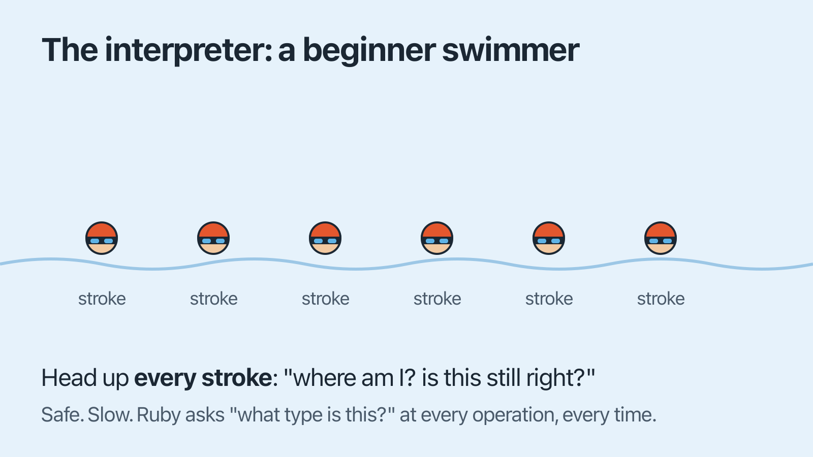
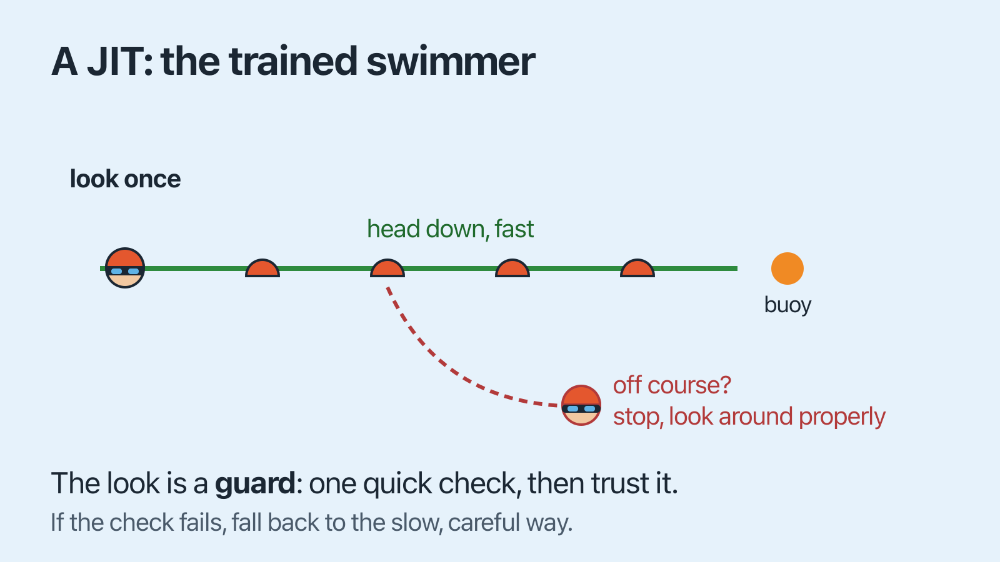
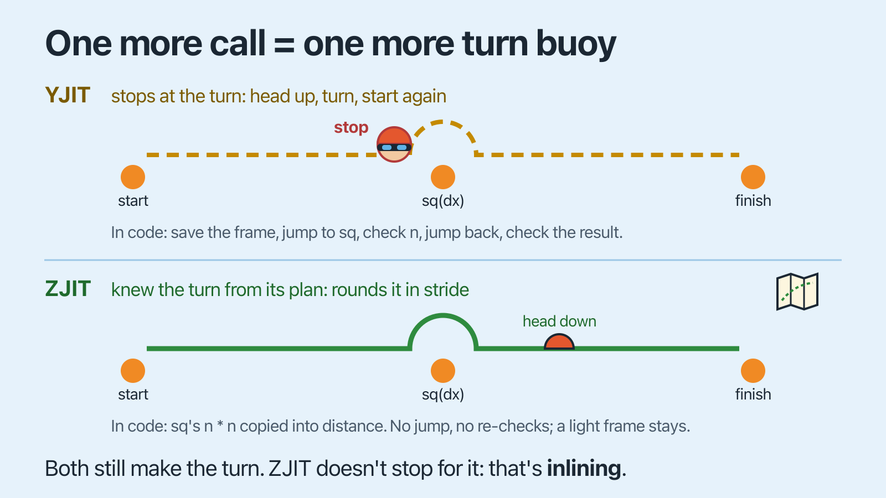
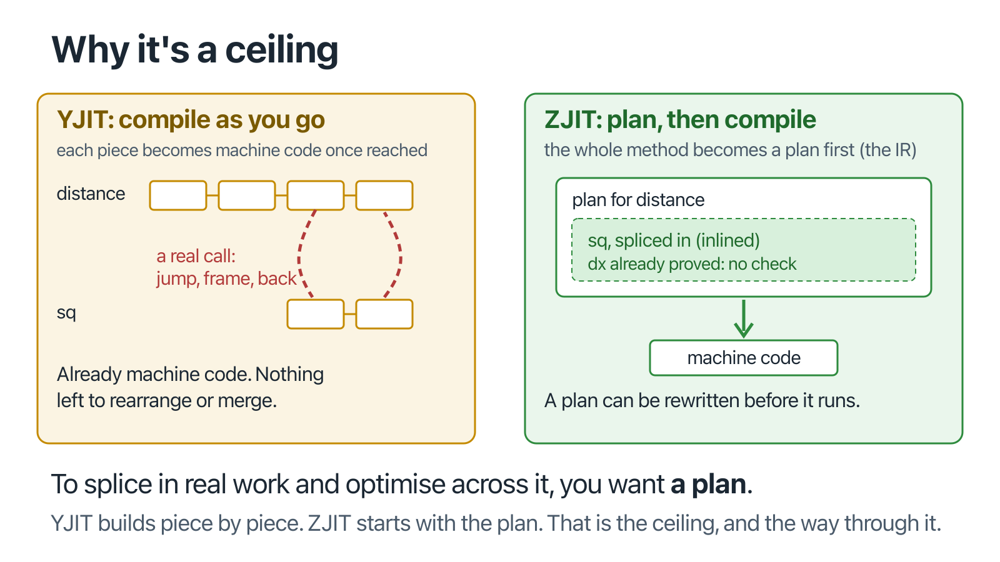

The Ceiling: Why Ruby 4.0 Needed a Second Compiler
Dhruva Sagar · RubyConf 2026
Ruby 4.0 ships two JIT compilers. Why build the second one?
Every time you lift your head
"Every time you lift your head, you slow down."
Ruby 4.0 ships two just-in-time compilers. Why build the second one?
Ruby swims with its head up

Our five lines
class Point
attr_reader :x, :y
def initialize(x, y) = (@x, @y = x, y)
end
def distance(a, b)
dx = a.x - b.x
dy = a.y - b.y
Math.sqrt(dx * dx + dy * dy)
end
The bytecode
ruby -r ./distance -e 'puts RubyVM::InstructionSequence.of(method(:distance)).disasm'
What the interpreter actually runs. Steps 0000-0010 are the first line, dx = a.x - b.x.
0000 getlocal_WC_0 a@0 0002 opt_send_without_block <calldata!mid:x, argc:0, ARGS_SIMPLE> 0004 getlocal_WC_0 b@1 0006 opt_send_without_block <calldata!mid:x, argc:0, ARGS_SIMPLE> 0008 opt_minus <calldata!mid:-, argc:1, ARGS_SIMPLE> 0010 setlocal_WC_0 dx@2 ... 0022 setlocal_WC_0 dy@3 ... 0038 opt_plus <calldata!mid:+, argc:1, ARGS_SIMPLE> 0040 opt_send_without_block <calldata!mid:sqrt, argc:1, ARGS_SIMPLE> 0042 leave
- get
a - call
xon it:a.x - get
b b.x- minus: whole numbers? checked every time
- store it in
dx - the same six steps for
dy dx * dx + dy * dyMath.sqrt(...)- return
Every step is general, and checks as it goes, every time it runs: the interpreter with its head up. Remember 0002 and the minus.
Ruby 4.1.0-preview1
Learning to sight

YJIT: compile as you go
- Once a method is called often (warm), compile a few instructions at a time, and run them
- Look at the values that really turned up
- Compile the next few for exactly those
In the water: sighting as you swim, deciding stretch by stretch.
YJIT: in its own words
YJIT's dump, trimmed: its comments (#), and the arm64 machine code it wrote under each.
# Block: distance@distance.rb:7 # Insn: 0002 opt_send_without_block (stack_size: 1) # call to Point#x # guard not immediate 0x16bbc4120: tst x1, #7 0x16bbc4124: b.ne #0x16bbc6284 ... # guard known class 0x16bbc4150: cmp x11, x12 0x16bbc4154: b.ne #0x16bbc62fc # guard shape 0x16bbc416c: cmp w12, w13 0x16bbc4170: b.ne #0x16bbc6378 0x16bbc4178: ldur x1, [x11, #0x10] ... # Block: distance@distance.rb:7 # Insn: 0004 getlocal_WC_0 (stack_size: 1) # defer_compilation 0x16bbc417c: b #0x16bbc63b4
- a new piece of machine code starts
- step
0002from the bytecode:a.x Point#xis anattr_reader: no Ruby code to run- check 1: an object, not a packed small value (
7,:x,nil)? - test the low 3 bits
- any set? jump out
- check 2: is its class
Point? - its class pointer vs
Point's address - different? jump out
- check 3: is
@xwhere it was last time? - its shape (instance-variable layout) vs the one seen before
- different? jump out
- all three passed: load
@x, 16 bytes into the object. No call - the next piece
- step
0004: getb - not compiled yet, so:
- jump to a stub that compiles it the first time we arrive
A failed check jumps to a stub: YJIT compiles another version for the new type (up to 4), then falls back to the interpreter.
Ruby 4.1.0-preview1 · ruby --yjit --yjit-dump-disasm
ZJIT: watch, then plan
- While the interpreter runs the method, record which types turn up: a profile
- Then turn the whole method into a plan: the IR (intermediate representation)
- Improve the plan, then compile it, once
In the water: watch a few laps, then plan the whole course, turns included.
ZJIT: in its own words
ZJIT's own dump, trimmed: its IR (intermediate representation), the plan for the whole method.
fn distance@distance.rb:7: bb3(v15:BasicObject, v16:BasicObject, v17:BasicObject): v79:ObjectSubclass[class_exact:Point] = GuardType v16 v82:CShape[0x10007a] = GuardBitEquals v81, CShape(0x10007a) v83:BasicObject = LoadField v79, :@x ... v93:Fixnum = GuardType v83, Fixnum v94:Fixnum = GuardType v90, Fixnum v95:Fixnum = FixnumSub v93, v94 ... v118:Fixnum = FixnumMult v95, v95 ... v130:BasicObject = CCallWithFrame v54, :Math.sqrt, v126 Return v130
- the whole
distancemethod, compiled at once - block
bb3, the body. Inputs:self(v15),a(v16),b(v17) - check: is
a's class exactlyPoint? YJIT's checks 1 and 2 in one step - check: is its shape (
v81)0x10007a? YJIT's check 3, same number - load
@xfroma(nowv79):v83isa.x. No call - check: is
a.xa Fixnum (a packed small integer)? - and
b.x? (v90, read the same way) - the minus, inputs already checked:
dxisv95, set once dx * dx:v95is already a Fixnum, no type check- call
Math.sqrtin C (v54isMath) onv126:dx*dx + dy*dy - return the result
Each value is named once (v95 is dx). A failed check exits to the interpreter; ZJIT can recompile later.
Ruby 4.1.0-preview1 · ruby --zjit --zjit-dump-hir
On five lines, nearly a tie
YJIT ZJIT # Insn: 0008 opt_minus (stack_size: 2) # guard arg0 fixnum v93:Fixnum = GuardType v83, Fixnum # guard arg1 fixnum v94:Fixnum = GuardType v90, Fixnum 0x16bbc41f4: subs x11, x1, x14 v95:Fixnum = FixnumSub v93, v94 ... ... # call to Point#y v102:BasicObject = LoadField v79, :@y # guard known class # guard shape ... ... # Insn: 0030 opt_mult (stack_size: 3) 0x16bbc42f4: mul x11, x11, x12 v118:Fixnum = FixnumMult v95, v95
Same checks at the minus; neither re-checks dx at dx * dx. At a.y, YJIT checks a again; ZJIT already knows it. 15 checks vs 8, each one cheap.
Ruby 4.1.0-preview1 · default settings
The plateau

One more call
def sq(n) = n * n
def distance(a, b)
dx = a.x - b.x
dy = a.y - b.y
Math.sqrt(sq(dx) + sq(dy))
end
One more call is one more buoy

At the turn buoy
YJIT ZJIT # call to Object#sq v95:Fixnum = FixnumSub v93, v94 # push callee control frame ... # gen_direct_jmp: existing block PushInlineFrame :sq, v116, num_args=1 ... v169:Fixnum = FixnumMult v95, v95 # Block: sq@distance_sq.rb:6 PopInlineFrame # Insn: 0004 opt_mult (stack_size: 2) # guard arg0 fixnum # guard arg1 fixnum # pop stack frame ... ... # Insn: 0036 opt_plus (stack_size: 3) v125:Fixnum = FixnumAdd v169, v173 # guard arg0 fixnum
YJIT: a real call into a general sq, and a check again when it returns. ZJIT: sq spliced in. No jump, no check on n, and it knows the result is a number.
Ruby 4.1.0-preview1 · default settings
Why it's a ceiling

The 2-beat kick

So, why build the second one?
- The next gains need the whole method as one plan. A compiler that works piece by piece never has one.
- A more traditional compiler, so more people can help build it.
"we want to both raise the performance ceiling (bigger compilation unit size and SSA IR) and encourage more outside contribution (by becoming a more traditional method compiler)." — Max Bernstein, ZJIT team, Rails at Scale, 2025-12-24
| compilation unit | how much is compiled at once: for ZJIT, a whole method |
| SSA IR | the plan ZJIT showed us: an intermediate representation in static single-assignment form, where every value gets one name, set once |
| method compiler | compiles one method at a time: the textbook shape |
Race day: params
def [](key) super(convert_key(key)) end def convert_key(key) Symbol === key ? key.name : key end
HashWithIndifferentAccess: what Rails params is built on.
activesupport 8.1.4.1
params, through both
YJIT at []: stops at the turn, a real call to convert_key
# call to ActiveSupport::HashWithIndifferentAccess#convert_key # push callee control frame # gen_direct_jmp: existing block
ZJIT at []: takes it in stride, convert_key copied in
PushInlineFrame :convert_key, v27, num_args=1 v78:BoolExact = IsA v10, v43 CondBranch v50, bb8(), bb7() ... PopInlineFrame v35:BasicObject = CCallWithFrame v27, :Hash#[], v71
Ruby 4.1.0-preview1 · default settings
The feed stop

A glimpse: seven everyday lines
Each line in its own method, called 100,000 times, default settings. Counting calls into Ruby methods: calls into C happen under both.
| One line | YJIT: real calls into Ruby methods | ZJIT: inlined into one plan |
|---|---|---|
params[:name].present? |
4 calls | all 4 inlined |
name.presence |
3 calls | all 3 inlined |
text.squish |
2 calls | both inlined |
list.second |
1 call | 1 inlined |
5.minutes |
3 calls | 2 inlined, 1 call |
obj.try(:upcase) |
1 call | 1 call (not inlined) |
nil.blank? |
inlined | folded to a constant |
Fewer jumps and fewer checks, not free: ZJIT still sets up a light frame for each. We counted calls; we didn't time them.
activesupport 8.1.4.1 · Ruby 4.1.0-preview1 · default settings
Calm water, choppy water
def double(x) = x + x # called with Integers only, or with five types
Calm water, only Integers: ZJIT copies double in, one check, one add. Choppy water, five types at the same spot. ZJIT plans for all five:
PushInlineFrame :double, v23, num_args=1 CondBranchHasType v10, ArrayExact, bb8(), bb9() v72:BasicObject = CCallWithFrame v37, :Array#+, v10 ... CondBranchHasType v10, Fixnum, bb12(), bb13() v79:BasicObject = CCallWithFrame v47, :Integer#+, v10 ... v60:BasicObject = Send v10, :+, v10
doublecopied in: no call- sight: an Array?
- yes: call Array's
+directly - the same for Rational
- a whole number?
- yes: a call into C, where calm water had one add
- the same for Float and String
- none of the five: a general call
YJIT, same chop: a real call to double, then a version per type inside it. Whole numbers keep the fast inline add; the other four call C.
Ruby 4.1.0-preview1 · default settings
Measured: the ZJIT team's results, and ours
| What | YJIT | ZJIT | Source |
|---|---|---|---|
| Writing instance variables, per run | 5 ms | 2 ms | ZJIT team, Mar 2026 |
| JIT memory, Shopify storefront | 125 MiB | 101 MiB | ZJIT team, Oct 2026 |
Ruby calls in params[:name].present? |
4 | 0 | ours |
Machine code for our params program |
320 KiB | 352 KiB | ours |
| Hand-backs to the interpreter, choppy water | 0 | 0 | ours |
The team, Oct 2026: ZJIT is "probably as fast as or faster than YJIT" on Shopify's storefront, and "there are definitely some where we are worse". Ours are counts and sizes from this talk's captures, not timings.
Sources: Denbeaux, Rails at Scale, 2026-03-18 · Bernstein, Rails at Scale, 2026-10-09 · ours: captures/ in the repo
Read your own code
ruby -r ./your_file -e 'puts RubyVM::InstructionSequence.of(method(:m)).disasm'
ruby --zjit --zjit-dump-hir your_file.rb
ruby --zjit --zjit-stats your_file.rb
Look for:
- A call that's still a call: a turn you could make easier
- Checks you didn't expect: a value that isn't one type
- Calls into C: time mostly out of the compiler's reach
What it means for Ruby
YJIT compiles Ruby a bit at a time, deciding as it goes; ZJIT plans a whole method at once, so it can see through small method calls and pay less for them. That's the ceiling the ZJIT team set out to raise.
Head down
"Every time you lift your head, you slow down."
Next time someone says "Ruby is slow", ask: which part?
Slides, code, every capture, the full write-up: github.com/dhruvasagar/the-ceiling
Sources
The ZJIT team, Rails at Scale
- ZJIT has been merged into Ruby
Bernstein, 2025-05-14 - ZJIT is now available in Ruby 4.0
Bernstein, 2025-12-24 - How ZJIT removes redundant object loads and stores
Denbeaux, 2026-03-18 - A new register allocator for ZJIT
Patterson, 2026-05-27 - The inliner is yielding benefits for ZJIT
Bernstein, 2026-07-28 - ZJIT is now as fast as YJIT
Bernstein, 2026-10-09
Ruby
YJIT research
- Type check removal ECOOP 2015
- YJIT VMIL 2021
- YJIT in production MPLR 2023
Everything else
- github.com/dhruvasagar/the-ceiling
- every capture, exact quotes, claims ledger